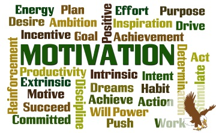

Benefits
There are many benefits of being motivated. Motivation is excellent at improving your life. Motivation can be present in personal lives, business,education, sports, and anywhere improvement is needed.
Other Benefits
Some benefits you could get from being motivated would be feeling at ease doing tasks and not being afraid to take risks. Motivation can create a much more positive outlook on life and towards themselves. If a person is motivated, they will think of the positives rather than the negatives and can be much more free-willed.
Related Terms
There are some characteristics you may have that could relate to motivation. These include being passionate, dedicated, driven, committed, and determined. It is possible to have these characteristics without being motivated, but motivation drives these characteristics of a person’s life.
- Passionate
- A person may have a strong belief or something they love doing and won’t give up on it. For example, a person might be passionate about rescuing animals.
- Dedication
- A person who is devoted to a task. For example, a person could be dedicated to finishing their project even with other distractions to them.
- Driven
- A person who works extremely hard to complete a task. These people are enthusiastic about the task at hand.
- Commitment
- A dedication to a specific cause or activity. For example, a person may be committed to a relationship where they put all their effort in for the relationship to work.
- Determination
- A person has a set goal and is willing to put all their effort into achieving that goal with a great result. For example, a person may have a goal to do twenty pushups when they work out, so they create a plan to achieve that goal.